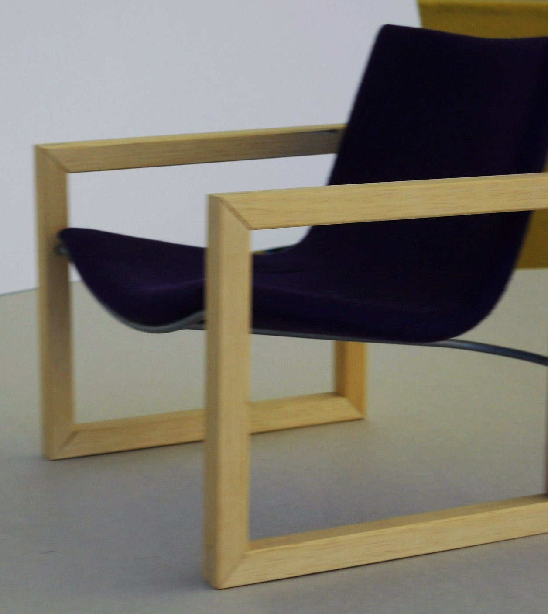
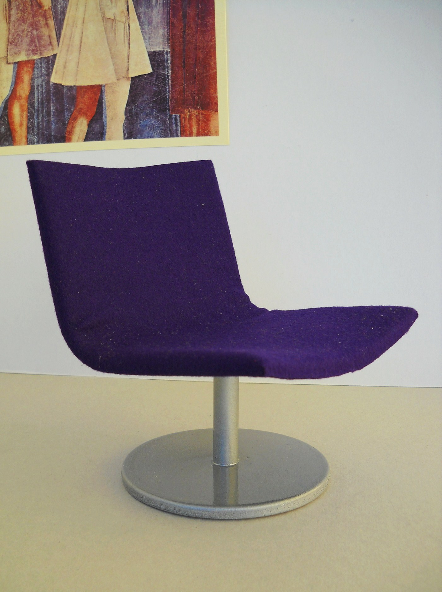
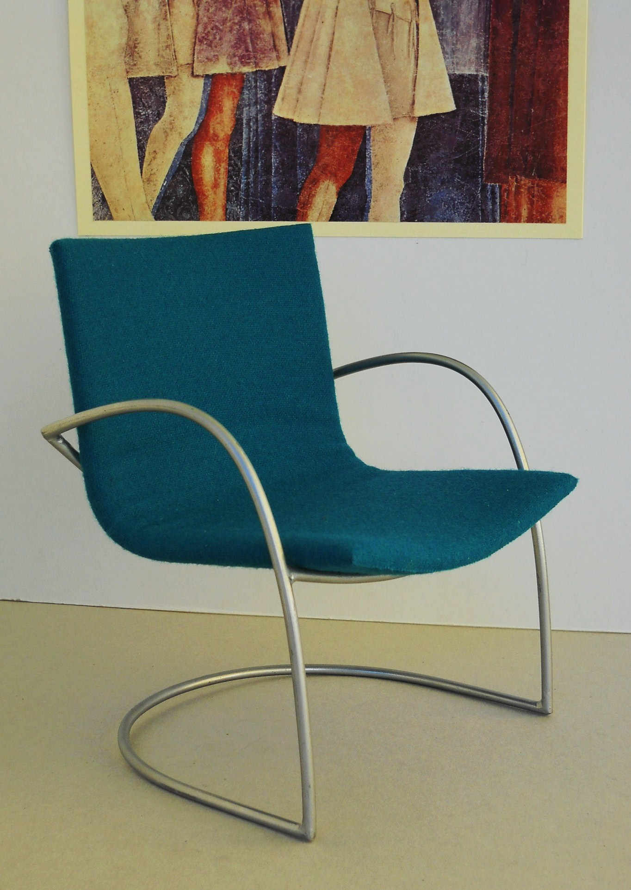

Industrial Design
La ricerca di Stefano Bianchi Dall'Era nel settore del mobile: sedie e arredi esposti nelle principali fiere internazionali, dove forma e funzione dialogano in un equilibrio essenziale.
Parallelamente alla pittura e alla scultura, Stefano Bianchi Dall'Era ha sviluppato una significativa attività nel campo dell'industrial design, con una concentrazione particolare sul settore del mobile. Il suo approccio muove dagli stessi principi della ricerca artistica: riduzione formale, tensione tra materiali, rispetto per la funzione d'uso.
Le sue sedie non sono oggetti decorativi: sono soluzioni abitative con una precisa identità estetica. Strutture in legno naturale o acciaio tubolare si combinano con imbottiture cromaticamente decise — viola intenso, verde acqua — creando pezzi riconoscibili nel panorama del design italiano contemporaneo.
I lavori di Bianchi Dall'Era sono stati presentati in più occasioni al Salone Internazionale del Mobile di Milano, al Salone Internazionale della Sedia di Udine, ad Abitare il Tempo di Verona e alla International Mobilmesse di Colonia.
Una presenza internazionale che conferma come la sua ricerca sul design non sia marginale rispetto all'attività artistica, ma ne sia una naturale estensione: lo stesso sguardo, applicato all'oggetto che abitiamo ogni giorno.
Per Bianchi Dall'Era il confine tra arte applicata e design è sempre stato poroso. Ogni pezzo nasce da un disegno a mano, dall'intuizione di una struttura, dalla scelta di un colore che non sia mai neutro. Il progetto di una sedia diventa così un atto compositivo, governato dagli stessi principi che guidano una scultura o una tela.



Milano — la vetrina più importante del design italiano nel mondo.
Udine — riferimento europeo per il design della seduta.
Verona — fiera internazionale dell'arredo e del complemento.
Colonia — palcoscenico internazionale del mobile europeo.